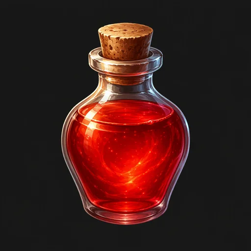
Poção de Vida Pequena
O primeiro frasco de todo caçador de veio.
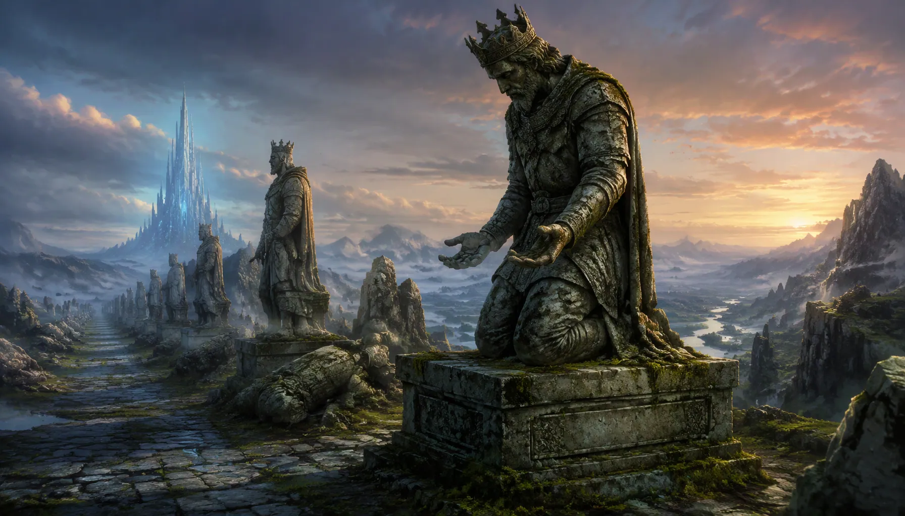
Wiki
Itens e histórias do jogo, com a arte de cada um. As páginas crescem conforme a arte fica pronta.
Wiki

O primeiro frasco de todo caçador de veio.

Para quem já apanhou de um chefe.

Frasco de quem caça longe da vila.
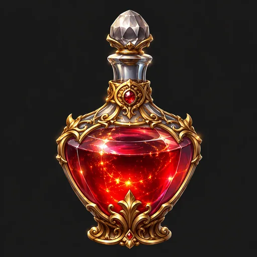
Vidro lapidado e ouro: remédio de campeão.
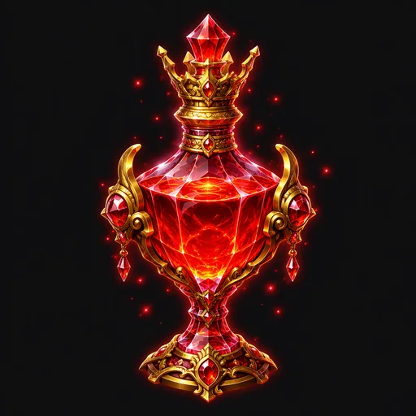
Raríssima. Dizem que brilha sozinha no escuro.
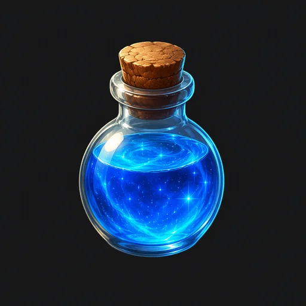
O primeiro frasco de todo caçador de veio.
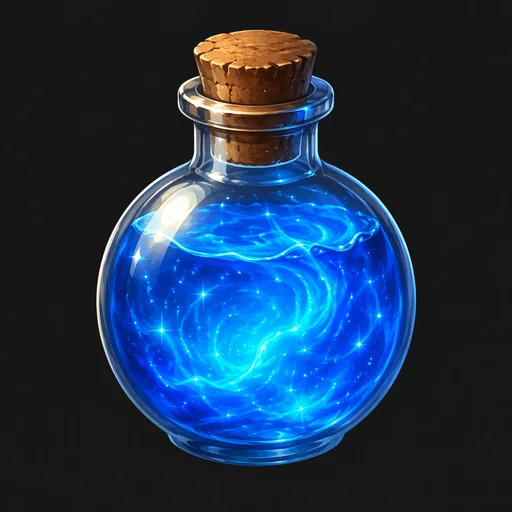
Para quem já apanhou de um chefe.

Frasco de quem caça longe da vila.
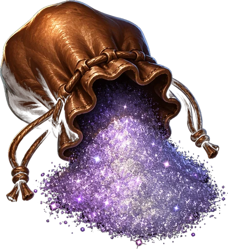
Pó fino de cristal manso, usado pelos ferreiros para reajustar um equipamento.
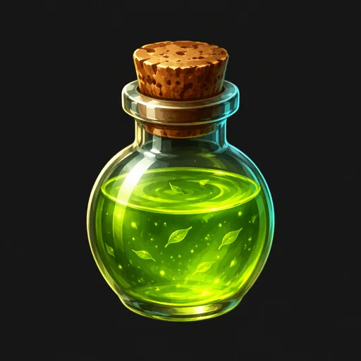
O primeiro frasco de todo caçador de veio.
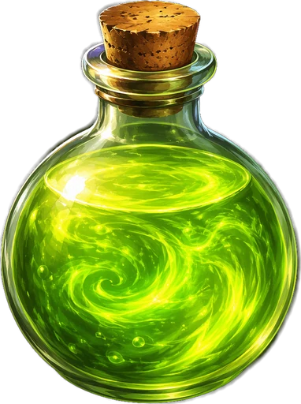
Para quem já apanhou de um chefe.
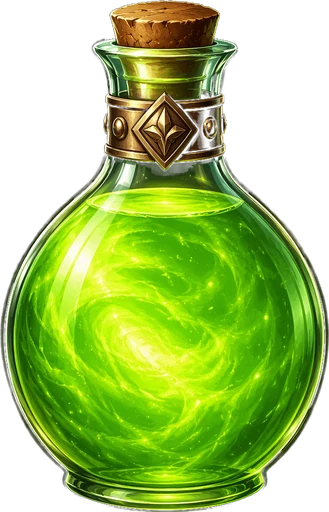
Frasco de quem caça longe da vila.
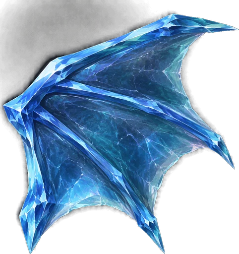
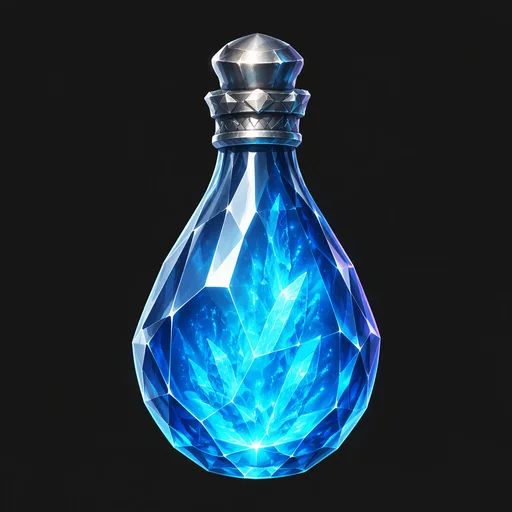
Cristal puro em gota. Brilha mais forte perto de um sino aceso.
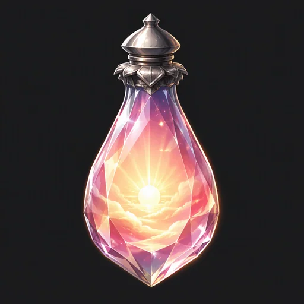
Luz de primeira manhã presa num frasco. Morna ao toque.
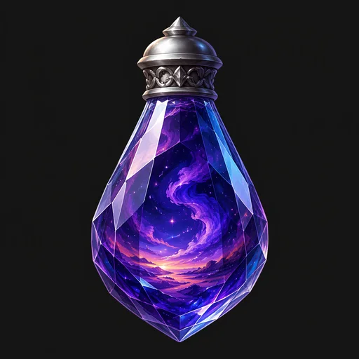
Um resto de anoitecer. Quem olha demais perde a hora.
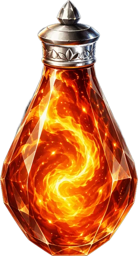
Brasa que não apaga. Os ferreiros guardam longe da palha.
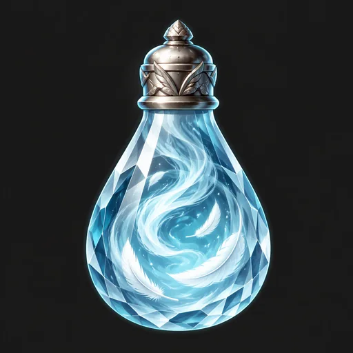
Vento engarrafado. Assobia baixinho quando vai chover.
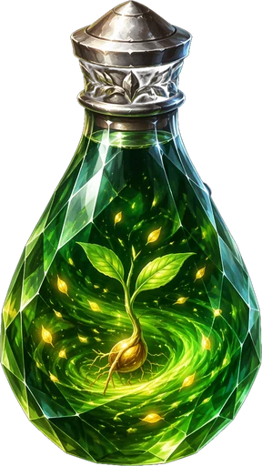
Seiva viva. Se cair no chão, alguma coisa brota.
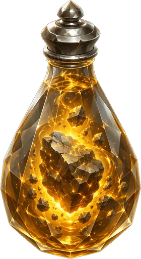
Pesa o triplo do que parece. Fria como fundo de pedreira.
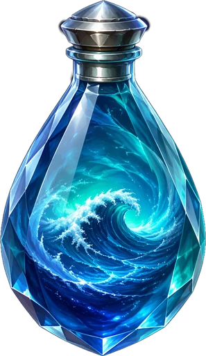
Água que ainda obedece à lua, mesmo dentro do vidro.
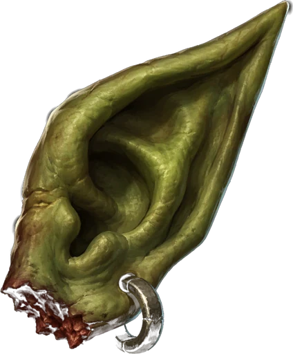
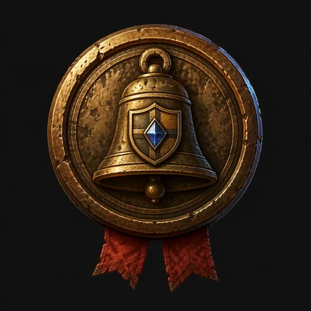
Insígnia de bronze da Guarda do Sino. Quem a carrega já ficou de pé na cerca.
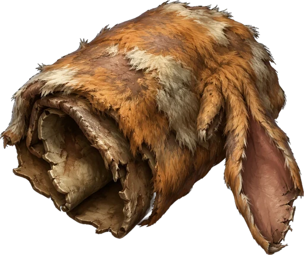
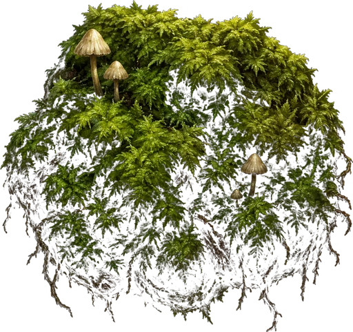
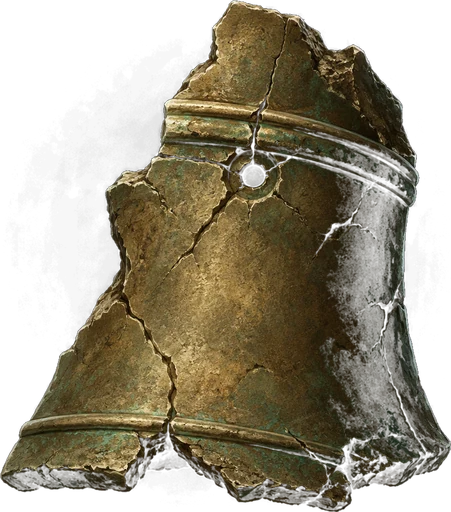
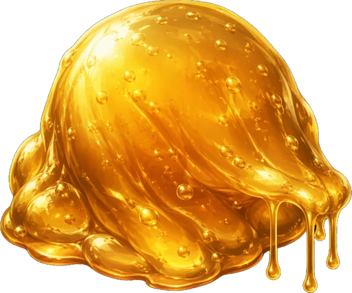
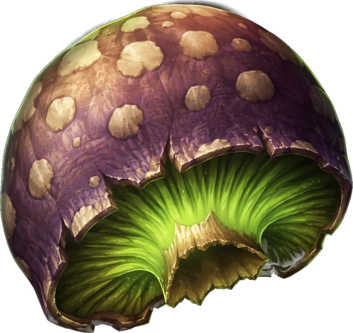
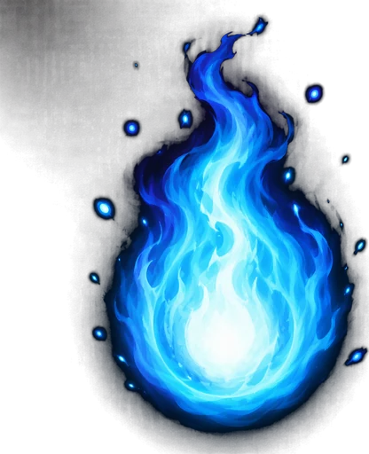
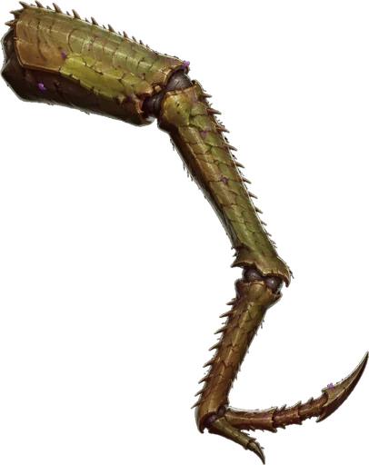
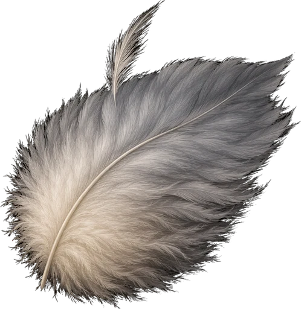
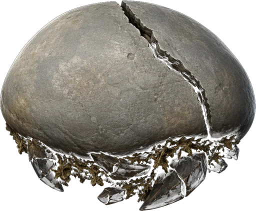
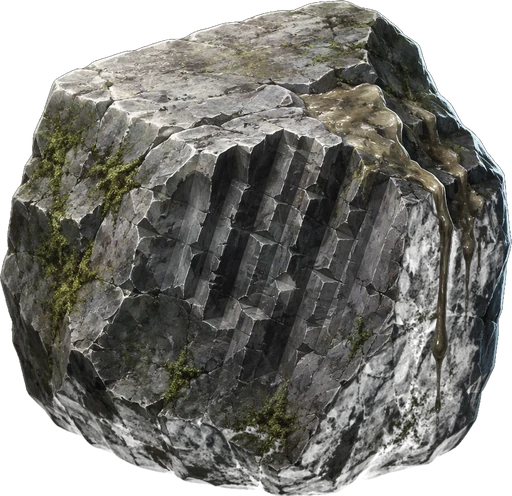
Wiki

Há três gerações, numa só noite, o cristal rompeu o chão e todos os sinos se calaram.

Sete companhias, uma ordem: ir até onde o azul termina e voltar.

A hoste voltou menor, carregando os mortos nos ombros. Ninguém a dispensou.

A única de joelhos, olhando o norte, na Estrada dos Reis Velhos.

Toda criança do Pouso toca a corda uma vez, e o sino guarda o toque para sempre.
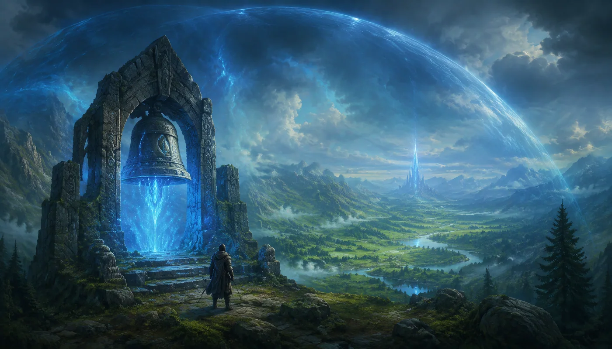
Cada sino aceso é um portal e um pedaço do domo que protege Ermândia.
Em breveCartasAs páginas entram quando a arte ficar pronta.